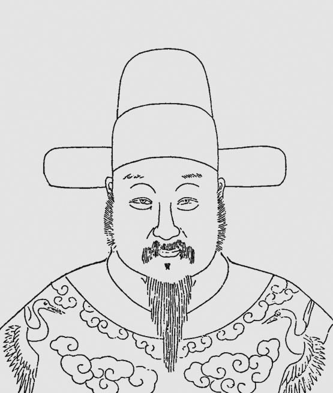
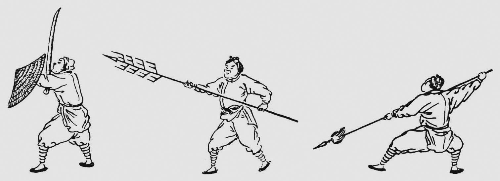
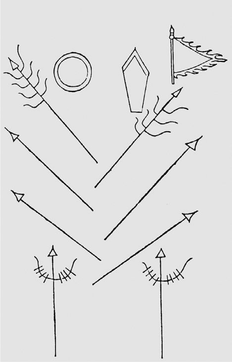
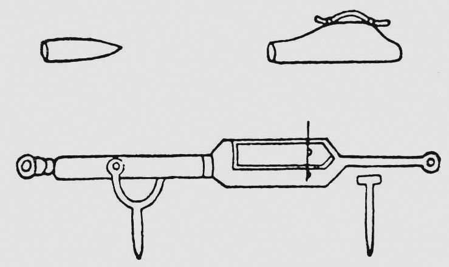
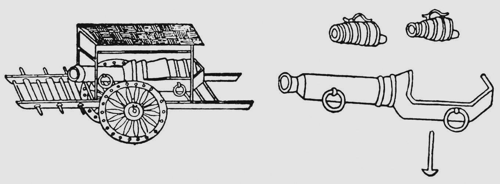
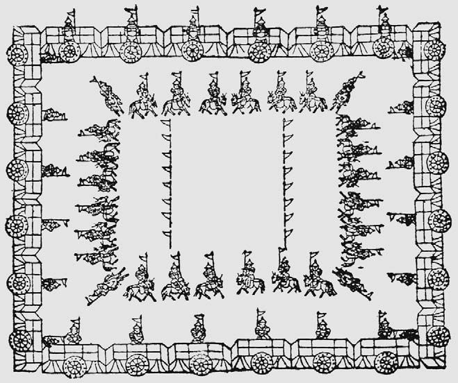
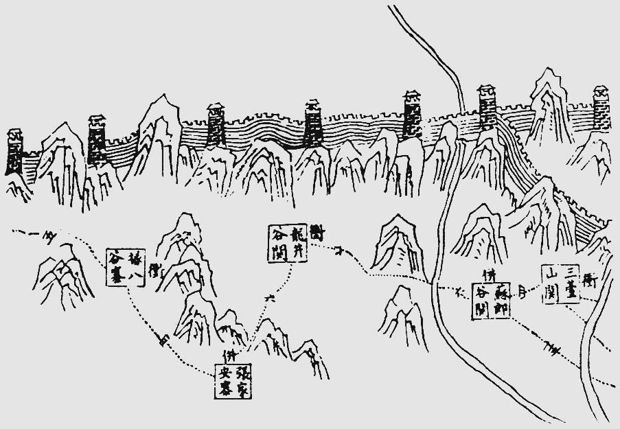
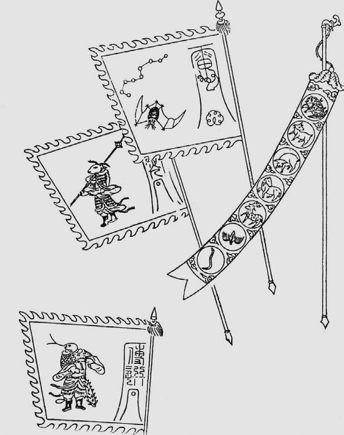

一代名将戚继光在阳历1588年1月17日离开了人间，按照阴历计算，为万历十五年十二月十二日。如果这消息已为皇帝所获悉，则多半是出于东厂中秘密警察的劳绩，因为政府的正式档案中并没有提到这件事情。
三个月以前，戚继光的名字最后一次在御前提出。一位监察御史上疏建议起用这位已被罢免的将领。这一建议使皇帝深感不悦，建议者被罚俸三月，以示薄惩 [1] 。戚继光是本朝最有才能的将领，其被劾罢官三年以后仍不能见谅于万历，原因全在于他和张居正的关系过于密切。
但是通观本朝武将的经历，其不幸似乎又不仅止于戚继光一人。甚至可以说，戚继光的谢世纵然并没有得到应有的荣哀，然而他在生前所受到的重视，仍然大大超过了其他将领。他的朋友，另一位名将俞大猷，和戚继光一样，具有再造本朝军事力量的宏图，但却屡被参劾并受到申斥，难酬壮志 [2] 。另外几位高级将领，卢镗先被拘禁，后遭斥革；汤克宽被拘释放，命令他戴罪立功，最终在塞外为国捐躯。戚继光部下的将领胡守仁、王如龙、朱钰、金科等人也受到革职或戍边的处分 [3] 。惟一的例外则是与他同时的刘显，虽然屡被参劾，却能岿然不动。这并不是朝廷对他特别垂青，而是他负有征剿四川“土蛮”的重任，这一战争旷日持久，也找不到更合适的人选取代他的指挥权。刘显去世以后，他的儿子刘被誉为跨灶之儿，继之而成为万历一朝的名将，但也迭经革调，1619年和努尔哈赤作战，在仓猝进兵的情况下力战而死 [4] 。

戚继光像
这些令人同情的遭际，在本朝带有普遍和必然的性质。探本溯源，还必须从本朝文官和武将之间的关系说起。
概括说来，武将领兵作战，和文官集团的施政原则在根本上是不能相容的。当社会和经济的发展不能平衡，冲突激化，以政治手段调剂无效，通常就会导致战争。有时候严重的天灾造成大面积的饥荒，百姓面对死亡的威胁，也会铤而走险，诉诸武力。但是我们帝国的文官，则一贯以保持各方面的平衡作为施政的前提，如果事情弄到动用武力，对他们来说就是失败的象征。他们具有一种牢不可破的观念，即上自国家，下至个人，不能把力量作为权威。如果一个地区有什么特殊的经济利益，那么就应当加以压抑，而不是提倡。至于天灾足以引起战争，则尤为无知妄说，因为从道德观念来说，天下的事物无不可以共同分配，灾民的暴动乃是小人犯上作乱的劣根性使然。
但是就武将来说，他们所受到的训练和战争的经历却养成了和文官截然不同的气质。他们需要具备准确的选择能力和决心，着眼点在于取得实效而不避极端：冲锋陷阵，要求集中全力，对敌人的重点作猛烈打击；退守防御，考虑的是地形的险要和工事的完善，如不可守就要断然放弃；战斗胜利，就一心扩张战果，而不为其他问题而犹豫。在一般情况之下，他们把自己和部下的生命视为赌博场中的筹码，必要的时候可以孤注一掷。而大多数文官则以中庸之道为处世的原则，标榜稳健和平。武人在刀剑矢石之中立下的汗马功劳，在文官的心目中不过是血气之勇，即使克敌制胜，也不过是短暂和局部的成功而已 [5] 。
在维持军队给养的问题上，同样表现了帝国政府重文轻武的风气。让军人自己组织和管理后方勤务，根本不能考虑 [6] ；即使是在文官管辖之下，把仓库的地点按照战略需要来作适当的配置，也被看作有背于平衡施政的原则。述种风气还使军人退伍以后不能得到正常的社会地位。本朝治理农民的根本方针是保持他们的淳朴无知，一个士兵退伍还乡，就等于增加一个无业游民，因为他在军队里所学到的技术和养成的起居习惯，已经难于再度适应农村的生活，事情的复杂性就会因之而增加。军官退伍以后所引起的问题更为严重。在别的国家里，一个退伍军官通常都受到应有的尊敬，如果担任民政职务，他的管理经验也能保证他胜任愉快。然而事情适得其反，我们的军官在长期训练中所培养的严格和精确，退伍以后竟毫无用武之地。他会发现在军队以外，人们所重视的是安详的仪表、华丽的文辞、口若悬河的辩才以及圆通无碍的机智。——总而言之，和他已经取得的能力恰恰相反。
这种观念上的南辕北辙，使文官不仅在精神上对武官加以轻视，而且在实际作战中，他们也常常对高级将领提出无理的指责。如果将领当机立断，指挥部队迅速投入战斗，那是贪功轻进，好勇嗜杀；要是他们暂时按兵不动，等待有利的战机，那又是畏葸不前，玩敌养寇。兵士抄掠百姓，该管的长官自然要受到处分，然而事情的背景却常常是军饷积欠过久。军饷由文官控制，然而一旦发生事故，他们却可以毫不承担责任而由将领们代人受过。
也许是有鉴于唐朝藩镇的跋扈，本朝从洪武开始，就具有这重文轻武的趋向。大约经过了一百年，文官集团进入了成熟的阶段 [7] ，他们的社会地位上升到历史上的最高点；换句话说，也就是武官的社会地位下降到历史上的最低点。这种畸形的出现，原因在于本朝的政治组织为一元化，一元化的思想基础则是两千年来的孔孟之道。如果让军队保持独立的、严格的组织，和文官集团分庭抗礼，这一元化的统治就不可能如所预期地成长、发展，以至于登峰造极。这种制度既经固定，将领们即使出生入死，屡建奇功，其社会影响，也未必抵得上一篇精彩的大块文章。
这种制度和风气所造成的严重后果早已被事实所证明。本朝的军事窳败尽人皆知，但其败坏的程度却出人意外。北方的边境每年都为俺答所入侵，被掳走的人民和劫去的财物不可胜计。1555年戚继光调赴浙江新任的时候，东南沿海也迭经倭寇的蹂躏。正当悲观和惶惑遍布于滨海各省，一股五十至七十人的海寇竟创造了一个奇迹。他们登陆后深入腹地，到处杀人越货，如入无人之境，竟越过杭州北新关，经淳安入安徽歙县，迫近芜湖，围绕南京兜了一个大圈子，然后趋秣陵关至宜兴，退回至武进。以后虽然被歼，但是被他们杀伤的人据称竟有四千之多。而南京为本朝陪都，据记载有驻军十二万人。这样的军事行动，在世界战争史上亦当称为罕见 [8] 。
面对这样令人焦虑的局面，戚继光的任务决不仅止于单纯地击败倭寇。他首先要组织一支新型的军队。从他的军事著作《纪效新书》中可以看到如何有条不紊地实施他的建军方案：宣布招兵的办法，规定月饷的数字，拟订分配列兵职务的原则，明确官兵的职责，设计队、哨、局的组织，统一武器的规格，颁发旗帜金鼓这一类通讯器材，等等 [9] 。建军方案的核心部分是确立铁一般的军法。军法的精神在于“集体负责”，即所谓“连坐法”，一队和一哨的官兵要互相保证在作战中勇往直前，不得退却。一人退却则一人被斩首，全队退却则队长被斩首，队长殉职而全队退却则全队被斩首。
《纪效新书》所涉及的内容非常广泛，甚至还记载了一种制作干粮的方法。然则这部著作的出现，也正好在另一个角度上反映出了当时的军训军令都没有固定的准则，专门研究军事技术的学校从未成立。如果部队手册、战斗纲要、编制表、后勤补给图解和军法条文等为军中必需的文字材料曾经存在，那么，它们不是没有付诸实施，就是早已不合现状，所以戚继光才会在他的书里不厌其详地作出规定和阐述。
在这种情况下，不论戚继光个人的意向如何，他所组织的新军就不可能不带上个人的色彩，所以人们就恰如其分地称之为“戚家军”。值得注意的是，这支新军在建立三十年之后，仍然还是戚继光的个人部队。这自然又和文官集团的平衡原则大相凿枘。在文官们的心目中，戚继光的军队不是社稷的干城，而是国家的威胁，加之他又和张居正关系极为密切，所以必须对他作严厉的弹劾。
在十六世纪中叶，日本这一个岛国能够严重威胁本朝东海沿岸各省的安全，这种现象是很难理解的。合乎逻辑的倒是本朝的士兵应该越海进攻日本。当时的日本不仅地狭人稀，而且几十年来没有形成一个统一的政权，内战频仍，法律和纪纲可谓荡然无存。本朝是一个高度中央集权的国家，被一个极有组织的文官集团所统治，中央指挥地方如身之使臂，极少发生抗命的事情。同时我们这个帝国在名义上拥有当时世界上最大的常备军，人数多达二百万 [10] 。
但是这种假想的逻辑并不适用于现实。本朝的军制规定，常备军由两百万“军户”提供，每户出丁男一人，代代相因不变。设立军户的目的，既在于保证兵员的来源，又在于保障“民户”不致因战争动员而受征兵的骚扰。这制度开创伊始，流弊即随之而来。民户被编入军户，大部出于强迫；即或出于自愿，也常常是基于权宜之计，时过境迁，当初的应诺就不能矢守不渝。所以各个驻兵的卫所刚刚成立，士兵逃亡和换籍的事件即已层出不穷 [11] 。时经一百多年，各卫所的土地，不少都为各军户抵押和出卖 [12] 。加之长年以来，除了西北边境，绝大部分地区都承平无事，所以，一个卫所的实际兵员往往远较规定的编制为少，在退化最严重的卫所中，竟仅为规定编制的百分之二或三 [13] 。而且这些有限的士兵还常常被军官当作营造和运输的劳工，再不然就是留在家里充当仆役 [14] 。
和这种每下愈况的情形相始终的是补给制度。本朝的军事供应和政事参合为一元。军队的粮饷补给，来源于地方政府的侧面供应。按理说，户部是国家财政的中枢，应该统筹全局，但实际上却类同于一个大型的会计机构，只是在账目上监督各个机关和各个地方政府的出纳。各个地方政府按照规定的数额把给养直接运交附近的军事单位，军区和中级以上的后勤机构。一个府县，可能输送粮食及银两于十几个不同的小单位；一个卫所，也可能接受十几个府县送来的粮食和银两 [15] 。这种方法一经成为定制，就如盘根错节，任何高级单位也无法把补给点和补给线作合理的通盘改组，以适应形势变化的需要。于是供应不能足额的情况就时有发生。试想，由十几个单位分别按固定的数量供应，总难免有个别单位由于意外的情况而不能如额缴纳；而其他单位则并不负有补足缺额的义务，即或有这样的义务，也不见得就有这样的能力。所以在开国一百余年以后，书面的规定早已和实际的详情格格不入。纵使有局部的调整，充其量也不过见效于暂时而终于不免捉襟见肘。
如果查阅官方的史籍，书上都明确无误地记载了全国的补给已由中央统筹分配，而实际的执行却全赖互不相属的下级机构。地方政府和地方军队之间的补给关系已如上述，即使是运往北京的漕粮，其运输的情况也十分奇特。所谓漕粮，就是从南方大多数府县中征收田赋所得的、通过大运河而运往北京的粮食。按明文规定，漕运由专业化的军士负责运送，运送的军士即称之为运军。全部运军有官兵十二万人，分驾运粮船一万二千艘。但是这个庞大的队伍却没有一个统筹后勤的机构来做周密的安排，以使其秩序井然地运转。粮船直接在江南的水滨接受纳税者所缴纳的谷米，然后解缆北运。一艘粮船由一个下级军官管理，并直接对中央政府负责。在所运的粮食送达北京附近的张家湾仓库以前，粮船上全体官兵的人身自由、生命财产甚至妻子儿女，都等同于保证这次运输安全的抵押品，因为除此而外，别无更好的方法可以作有效的管理 [16] 。至于粮船的制造，也同样表现了散漫和缺乏组织的特性。这些粮船的法定使用期限为十年，过期就需要重新建造。在淮河沿岸设有“船厂”一处，是全国最大的造船场所，其产量的高峰为年产七百艘以上。然而这个所谓的船厂实际上由八十二个小型船厂拼合凑拢，各厂之间各自经理。虽有一个类似于总管理处的机构，它却无统一调度人力和物资的权能，自然也更谈不上有效的技术分工 [17] 。
不消多说，组织上的低能必然造成装备上的落后。本朝并不完全缺乏这方面的能工巧匠，但是他们都被集中到皇城里，专门为皇帝的禁卫军制造精美的甲胄 [18] 。一般的野战军只能服用衬以小铁片的棉布袄，或者由纸筋搪塞而成的“纸甲” [19] 。至于士兵们使用的武器，也大多是由各地府县作为赋的一个部分制造缴送 [20] ，质量既有欠精良，规格也谈不上标准化。
以上种种落后的情况，使本朝野战军的战斗力几乎与农村的民兵相去无几。与这种情况相一致的，是对于将领的选拔。在当权者看来，一个将领所应该具备的素质是勇敢粗豪而不在于头脑清晰。上文所提到的刘，外号人称“刘大刀”，根据夸大了的描写，他所用的镔铁大刀重一百二十斤，可以在马上“轮转如飞” [21] 。和刘同在辽东战役中牺牲的杜松更为粗蛮卤莽。他在作战时身先士卒，可是一旦战败，就会毁坏自己的兵器甲胄以发泄怒气，而且不断声称必须自杀或者落发为僧，毫无镇定从容的大将风度。因之，此人被努尔哈赤称为“杜疯子” [22] 。
军官的任命多数以“世荫”的形式而继承父业。任命的程序相当复杂，大致是高级将领的子孙需要降几级继承，下级军官则无须降级 [23] 。从本朝中期开始，情况稍有改变，自兵部尚书刘大夏奏准推行武试，任何有志于成为军官的人只要考试及格就可以取得进身之阶。但事实上由考试及格充当军官并上升为高级将领的，可谓绝无仅有。而且这种武生的考试又重在刀枪弓马的是否娴熟，由文官主持的笔试，其要求不过是粗通文字而从未涉及军事科学。各处所开办的“武学”，也以儒家经典作为主要的讲授内容，其教学进度，以“每日总授不过二百字”为原则 [24] 。
用这种方法培养出来的高级将领，几乎很少有人具备运筹帷幄的谋略。其实这也正是文官集团所预期的目的。将领既然大多属于一勇之夫，当然就有必要任用文官作为总督巡抚，让他们来指挥各级武官 [25] 。在总督巡抚之下还有“兵备使”或“海防道”，他们名为监察，实则握有调度攻防的权力。在军政方面，人事的任免以及补给、交通各项也统统由文官主持。
这种军事体制的设计，显而易见，其重点不在于对付敌国的全面入侵，同时也不打算全面进攻敌国。发生在1449年号称“土木之变”的战役，正统皇帝为瓦剌所俘虏，已经暴露了军事体制中致命的弱点。然而这样震惊全国的事件仍然没有能够引起应有的重视与改革。武备继续废弛，军事组织不断衰退。文官们只要在他们的任期中保持平静无事，则一切有关军队改造的计划大可束之高阁。一直到十六世纪中叶，倭寇的势力大张，不仅屡次攻破了被视为固若金汤的东南海防，而且长驱直入，视守军为无物，这才使中枢的文官惊醒，发现这低能的军事制度将要危及整个帝国以及他们个人的安全。穷则思变，改革已成为势所必然，而改革的初步，仍在于选择有创造精神的高级将领，他必须在战略上深谋远虑，而又精通各种战术。
蹂躏东南沿海的倭寇不同于普通的海盗。海盗大多是乌合之众，只要抄掠财物的目的一经达到，随即呼啸而去。而倭寇则不然。他们登陆以后通常要建立根据地，有时还围攻城池。其中的成员也并非全部来自日本，而常常混有不少的中国人。在一般情况下，中国人还在其中占有多数，而且可以担任高级头目 [26] 。
倭寇入侵的原因，与国际贸易有不可分割的关系。本朝禁止民间的海运通商，虽然律有明文，但是实际上却无法彻底执行。东南沿海的走私贸易，由来已久，好多不同国籍的冒险家纷至沓来。这些冒险家所使用的船只，最大的长达一百尺，宽达三十尺，船壳厚达七寸，超过了中国战舰的规模。据记载，在这些冒险家出没的极盛时期，每天有大小船只一千二百余艘在中国海岸活动 [27] ，数字似属夸大，但是利之所在，熙来攘往，已不在话下。其贸易的区域从日本各岛至暹逻湾，状如一弯新月。在中国政府海上巡逻力量所不能达到的近陆岛屿上，他们指定了走私贸易的港口。由于没有一个法庭可以解决买卖双方间合同和债权的种种纠纷，十多个有力量的中国船主以武力作为后盾充当了仲裁者，并因而逐渐被认为海上权威，成了海盗的头目 [28] 。
这些海盗头目声威赫赫，和当地的士绅互相勾结，甚至结为婚姻之好。他们公然在沿海修理船只，而且勒令村民接受他们的传讯。这种海上权威虽然尚属萌芽，但任之滋长发育，则必然会威胁我们这个以农业经济为基础的政府 [29] 。
海盗肆无忌惮的活动，迫使政府不得不采取强硬的对策。然而冲突一开，我们在政治和军事上的虚弱即暴露无遗。高级指挥官无法确知部下战士的实际数额，也弄不清究竟有多少战船可以调配使用。下级军官在部队出发之前先要向地方富户勒索兵饷给养。而一旦发生战斗，有的部队干脆望风而逃，有的部队虽然敢于迎战，但由于墨守密集队形的战术，往往造成“一人失利，万人奔溃”的后果 [30] 。而可歌可泣的作战，却反而出现于仓猝集合的民兵以及各地生员所组织的保卫家乡之情景中。
在日本方面，充当海寇的武士，来自山口、丰后、大隅、萨摩、博多湾、对马和五岛列岛 [31] 。他们既无统一的领导，也无长远的作战目的。起初，他们有一个空中楼阁式的希望，以为和中国海盗的联合军事行动可以迫使中国政府开放对外贸易，而他们中的领导人也可以受到招安而荣获海陆军将领的官衔。这些希望在总督胡宗宪发动的一次行动之后终于成为泡影。胡宗宪以招安为诱饵，使这些海盗头目束手就擒，而后又把他们的头颅送到北京邀功 [32] 。这种措置只能激起日本的侵犯者更大规模的来犯，并且使今后的屡次入侵更缺乏政治意义，其惟一的目的只在于劫夺财货。
这些日本海寇虽然在上层缺乏统一的领导，但下层的组织力量则不可忽视。虽然是杀人越货，也表现了日本下层社会结构的严密性。据目击者记载，不论作战或宿营，倭寇的小头目对下级战士能施以极严格的纪律管制 [33] 。各个小股部队战法一致，也表示了他们并非仓猝招募而来的雇佣兵。他们不断地以寡敌众，击败了数量上占优势的中国官军，而中国的农民造反，却大抵缺乏这种能力。
这些海寇乘坐可以装载百人左右的船只登陆。大举入侵时，常常集结三十至五十艘船只，人数多达几千。在他们的凶焰最为高炽之际，可以有两万人据守占领区内的军事要地。本地的居民在威逼利诱之下也有不少人参与他们的行列，其中有的人在以后被押送至日本作为奴隶 [34] 。他们劫掠的物品不限于金银珠宝，根据需要和可能，他们也夺取内河船只和其他商品。有一段记载提到他们曾大批搜集蚕茧并勒令妇女们缫丝 [35] 。这种情况业已与占领军在当地组织生产没有多少差别。
在入侵的初期，他们几乎战无不胜，主要原因在于战术的优势和武器的精良。他们能极其娴熟地使用双刀，并且和近旁的伙伴保持密切的联系，互为呼应，协同作战。颇为特异的是，他们的指挥信号乃是班排长手中的折扇。当双方开始接触，班长排长把折扇往上一挥，他们的部下就以刀锋向上。当对方的注意力为这种动作所吸引，他们就突然倒转刀锋迎头砍下。这种双刀的长度不过五尺，但在一个熟练的使用者手中挥舞，一片刀光，使“上下四方尽白，不见其人”，可以在一丈八尺的方圆之内杀伤对方。其他常见的武器还有弓箭和标枪。据记载，“倭竹弓长八尺，以弓蹈其弰，立而发矢。……镞宽二寸……近身而发，无不中者”，所掷的标枪“不露竿，突忽而掷，故不测”。至于火器，似乎并没有为他们所重视。虽然戚继光说过鸟铳由日本传来，但在记录上却看不到倭寇曾有效地使用这种武器。他们偶尔使用的火炮，看来也是在中国俘获的战利品 [36] 。
倭寇的基本战术是派遣三十人以下的小部队进入村落，这些小部队的进止必在严密的互相照顾之下。协同的信号是令人战栗的海螺声。这些入侵者善于使用当地的向导，并熟练地派遣尖兵和斥候，有层次地展开兵力，并以佯攻、驱使难民走在队伍的前面等方式，造成中国官军的扰乱和疑惑。中国官军根本无法对付这一套战术，即使是士气最为高昂的部队，他们的对策也不过是仅凭血气之勇猛冲敌阵，既无有效的队形，又缺乏侧翼和后续部队的接应，其经常遭到失败就为势所必然 [37] 。南直隶和浙江两省，河流湖泊极多，官军溃退时有如狼奔豕突，被践踏或被挤落水致死者也为数累累。有一次总督胡宗宪也在败退之中被推落水，几乎淹死 [38] 。
除此以外，倭寇在和大部队官军遭遇时，还采取另一种战术，即先取守势以减杀官军的锐气，或者制造恐怖气氛使官军陷入心理上的劣势，然后待机出击。戚继光下面的一段记载可以作为说明：“余数年百战，但见诸贼据高临险，坐待我师，只至日暮，乘我惰气冲出；或于收兵错杂，乘而追之。又能用乘锐气，盛以初锋。又其盔上饰以金银牛角之状，五色长丝，类如神鬼，以骇士气。多执明镜，善磨刀枪，日中闪闪，以夺士目。故我兵持久，便为所怯。” [39]
所以，总结以上的情况，不论官方文件如何强调这一战争是政府的官军围剿海贼，实际上却是中国的外行对付职业化的日本军人。
戚继光着手组织他的新军，兵源不是来自军户和卫所，而是另行在浙江省内地招募的志愿兵 [40] 。由于政府已深切理解事态的严重性，所以不得不批准他的组织新军的计划，并且加征新税作为招募和训练的费用 [41] 。对于这种支持，戚继光在对士兵所作的训话中就告诫他们应该知所感激。他说：“你们当兵之日，虽刮风下雨，袖手高坐，也少不得你一日三分。这银分毫都是官府征派你地方百姓办纳来的。你在家那个不是耕种的百姓？你思量在家种田时办纳的苦楚艰难，即当思量今日食银容易。又不用你耕种担作，养了一年，不过望你一二阵杀胜。你不肯杀贼保障他，养你何用？就是军法漏网，天也假手于人杀你！” [42]
道德义务的劝说加上群众固有的宗教信仰，使戚继光得以在所招募的新兵中建立铁一般的纪律。上文所说的“连坐法” [43] 虽然不可能经常被不折不扣地执行，但其杀一儆百的恐吓力量已足以使部队在强敌之前不易被击溃。他所制定的赏罚原则并不完全决定于战斗的胜负。即使大败，有功者仍然要给予奖赏；相反，即使大胜，作战不力和临阵脱逃者仍然要受到处罚 [44] 。在他的一本奏折里提到1562年的一次战役：他命令部队夺取一座倭寇占领的石桥，第一次进攻失败，一哨官兵三十六人全部阵亡。第二哨继之而上，又损失了一半的人员。这时剩下的官兵企图后退。在现场督战的戚继光手刃哨长，才使攻势得以继续不衰，最终击破敌阵，大获全胜 [45] 。而这次胜利，也就成了他一生中最值得纪念的事件之一。
这种严格的纪律固然是取得胜利的必要保证，但是它的残酷性也实在使人不寒而栗。士兵离队小便就会受到割去耳朵的处罚 [46] ，而且据传说，戚继光的第二个儿子由于违犯军法而被他毫不犹豫地处死。这样的严刑峻法也许已经离开了通常的人情，但是，戚继光的这一治军方针终于造成了一支坚强的部队。后来他调任蓟辽总兵，有一次在大雨中向全军训话，惟独他从南方带来的三千名军士能几个小时屹立不动，如同没有下雨一样 [47] 。
然则严峻的纪律，仅是治军方针的一面；另一方面则必须鼓舞士气。士兵的自尊心和自信心在这里起着重要的作用。一支经常被敌人打得落花流水的部队谈不上自尊和自信，必胜的信念有赖于能力和技术，而能力和技术又来自平时的刻苦训练。
戚继光的训练方法得自专家的口授。这些宝贵的经验过去由于不为人所重视而没有见诸文字。到俞大猷才作了扼要的阐述，而戚继光则把所有的细节写成了一部操典式的书本。
操练技术的主要着眼之点，可以说是用“辩证法”的原理来分解动作。每一个动作都有相对的两个方面：身体有防盖和没有防盖的两个部分；一种姿式有动和静、正面和侧面的两种因素；有攻击则同时有防御 [48] 。总而言之，既有阴又有阳，有阳亦必有阴。例如操练近身武器，也和拳术或舞蹈的原则相似，任何一个姿式都可以作三段式分解，也就是开始——稍为休憩而转变——继续进行又迄于静止，用戚继光的术语来说，就是“起——当——止” [49] 。这些姿式又按其不同的形态而有各种离奇的名目，例如骑龙式、仙人指路式、铁牛耕田式、太公钓鱼式等等。运用这些动作，要求“左右来俱有拍拉”，“后发先至”。至于在实战中和敌人决斗，除了熟练地掌握以上各种基本姿式和原则以外，最重要的乃是佯攻，亦即声东击西，出其不意 [50] 。
在戚继光以前，在军队中受到重视的是个人的武艺，能把武器挥舞如飞的士兵是大众心目中的英雄好汉。各地的拳师、打手、盐枭以至和尚和苗人都被招聘入伍。等到他们被有组织的倭寇屡屡击溃以后，当局者才觉悟到一次战斗的成败并非完全决定于个人武艺。戚继光在训练这支新军的时候，除了要求士兵娴熟技术以外，就充分注意到了小部队中各种武器的协同配合，每一个步兵班同时配置长兵器和短兵器。在接战的时候，全长十二尺有余的长枪是有效的攻击武器，它的局限性则是必须和敌人保持相当的距离。如果不能刺中敌人而让他进入枪杆的距离之内，则这一武器立即等于废物 [51] 。所以，戚继光对一个步兵班作了如下的配置：队长一名，火伕一名，战士十名。这十名战士有四名手操长枪作为攻击的主力。其前面又有四名士兵：右方的士兵持大型的长方五角形藤牌，左方的士兵持小型的圆形藤牌，都以藤条制成。之后则有两名士兵手执“狼筅”，即连枝带叶的大毛竹，长一丈三尺左右。长枪手之后，则有两名士兵携带“镋钯”。“镋钯”为山字形，铁制，长七八尺，顶踹的凹下处放置火箭，即系有爆仗的箭，点燃后可以直冲敌阵 [52] 。

军士所持武器分别为藤牌、腰刀、狼筅和长枪。
这种配置由于左右对称而名为“鸳鸯阵”。右边持方形藤牌的士兵，其主要的任务在于保持既得的位置，稳定本队的阵脚。左边持圆形藤牌的士兵，则要匍匐前进，并在牌后掷出标枪，引诱敌兵离开有利的防御的位置。引诱如果成功，后面的两个士兵则以狼筅把敌人扫倒于地，然后让手持长枪的伙伴一跃而上把敌人刺死戳伤。最后两个手持镋钯的士兵则负责保护本队的后方，警戒侧翼，必要时还可以支援前面的伙伴，构成第二线的攻击力量 [53] 。

戚继光所创“鸳鸯阵”示意图，标示了每个位置上步兵所持的武器。
可以明显地看出，这一个十二人的步兵班乃是一个有机的集体。预定的战术取得成功，全靠各个士兵分工合作，很少有个人突出的机会。正由于如此，主将戚继光才不惮其烦地再三申明全队人员密切配合的重要性，并以一体赏罚来作纪律上的保证 [54] 。这种战术规定当然也并非一成不变，在敌情和地形许可的时候，全队可以一分为二，成为两个横队与敌人拼杀；也可以把两个镋钯手照旧配置在后面，前面八个士兵排成横列，长枪手则分列于藤牌手与狼筅手之间 [55] 。
以藤牌、毛竹、铁叉作为标准武器，表现了戚继光的部队仍然没有脱离农民气息。但如果认为他不了解火器的功效，那是不符合实际的。他在实战中运用过火器，和将领讲解火器的利弊，并在奏折中提到了火器的重要性。然则终戚继光的一生，他仍然以上述的鸳鸯阵法作为主要的战术。这倒不是由于他因循守旧，而是牵涉到很多不易解决的复杂因素。
让战术全面现代化的建议，曾经被名将俞大猷提出过。他准确地指出，倭寇的特长是娴习陆战，水战的技术反而低劣。俞大猷主张，以有效的战船和火炮歼灭倭寇于海上，根本不让他们有登陆的机会。在战术原则上，在他所著的书里也明白指出：“海上之战无他术，大船胜小船，大铳胜小铳，多船胜寡船，多铳胜寡铳而已。” [56] 他给总督的禀帖中，曾经请求把陆军军费的一半用来配备水师。但纵使俞大猷的声望和战绩都十分卓著，这些有益的建议却始终没有被采纳，因而壮志未酬，赍恨以殁。
然则俞大猷本人也不可能理解，他的建议，所牵涉的问题和将要引起的后果已经超出军备问题而及于政治。他要求亲自率领“闽广大船数百艘，兵数万”，如果一旦成为事实，有关各省的财政就要从原来小单位之间的收支而被集中管理。与之相应，这些后勤机构的人员必须增加，而且必须一扫苟且拖沓的办事作风，保证规格和数字的准确，才能取得预期的行政效率以与现代化的军事技术相配合。而且和他们往来的各个机构，也必须同样地注重实际。然而我们这个庞大的帝国，在本质上无非是数不清的农村合并成的一个集合体，礼仪和道德代替了法律，对于违法的行为作掩饰则被认为忠厚识大体。各个机构之间的联系，从来没有可资遵守的成文条例。俞大猷当然更不可能预见到，在未来的好几个世纪之内，上面这些情况在我们这个以农业经济为基础的国家里竟不能发生根本的改变。现代化的技术和古老的社会组织断然不能相容，要不是新的技术推动社会组织趋于精确和严密，那就是松散的社会组织扼杀新的技术，二者必居其一。
这种为个人力量所不可抗拒的社会因素，使俞大猷的计划毫无实现的希望。相形之下，戚继光的方案就比较现实。他没有去触动整个的国家体制，而只是脚踏实地，做他职责范围内力所能及的事。他从1559年开始招募了三千名士兵。两年之后，兵员增加一倍，1562年更扩大为一万人 [57] 。可是他的部队从来没有一个后勤司令，也没有一个固定的军需处和兵工署。在整个国家机构之中，也没有委派过向他的部队作后勤供应的专职人员。他部队中的装备和武器，来源于各府县的分散供应 [58] 。这种情况自然不能保持武器的质量。在戚继光的著作中，就明确提到各地所造的鸟铳铳管常有炸裂的危险，致使士兵提心吊胆，不敢双手握铳以作精确的瞄准。有的火炮，铅弹与口径的尺寸不合；有的火炮，则导火线无法燃点 [59] 。有鉴于俞大猷的壮志难伸和火器的实际情况，戚继光所拟订的战术仅仅把火器的应用限制在有限的范围内。他说：“火器为接敌之前用，不能倚为主要战具。” [60] 在练兵的后期，他规定十二个人的步兵队配备鸟铳二枝，一局（相当于一连）的鸟铳手，必定要有一局的步兵“杀手”协同作战。
按照俞大猷使军队现代化的计划，要求兵精械利，把原来两个士兵的军饷供应一个士兵，以部队的质量来代替数量 [61] 。戚继光的看法则不同。我们帝国的军队是一支全能性的军队，也是一支长久性的军队 [62] 。它经常的任务是面对内部的叛逆而非外部的侵略者，具体地说，就是镇压内地农民和边区的少数民族。地区间的人口过剩、灾害频仍、农民的流离失所、官吏的苛刻暴虐，都可以迫使暴动随时发生，而以我国幅员之大，这种所谓造反作乱的地点也极难预测，所以这个任务就不是一支高效率的机动部队所得以完成的。在多数情况下，官军会被造反者死死吸住，造反者熟悉当地的地理民风，官军往往会因之陷入被动而使质量的优势无从发挥。因此，数量的多寡就成为决定胜负的因素。除此以外，俞大猷计划中所创建的精锐部队，他们领取优厚的军饷，又不能和社会上的其他部门对流，那么这样一个浮游在社会上的军事团体非但不能解决上述的社会问题，相反还会引起新的社会问题。再往下推求，俞大猷要求建立现代化的海军以拒敌于国门之外，作战的目的，则在消灭国际贸易，也和世界历史趋势相反。
戚继光的募兵原则是只收农民，而不收城市居民 [63] 。他认为来自市井的人都属于狡猾无赖之徒。这种观点，虽然有它的片面性，但揆诸实际，在城市中有固定职业的人是极少自愿从军的。士兵为社会所普遍轻视，其军饷也相当微薄，城市中的应募者绝大多数只是把兵营当作解决食宿的救济所，一有机会就想另谋高就。这样的士兵如何能指望其奋勇杀敌以致效死疆场？所以戚继光订立了一条甄别应募者的奇特标准，凡属脸色白晰、眼神轻灵、动作轻快的人一概摈诸门外，因为这种人几乎全是来自城市的无业游民，实属害群之马，一旦交锋，不仅自己会临阵脱逃，还会唆使周围的人一起逃跑，以便一旦受到审判时可以嫁祸于这些言辞钝拙的伙伴。在这个标准下招收来的兵员，都属于淳朴可靠的青年农民，而“鸳鸯阵”的战术，也是针对这些士兵的特点而设计的。他曾明确地指出，两个手持狼筅的士兵不需要特别的技术，膂力过人就足以胜任。而这种狼筅除了扫倒敌人以外，还有隐蔽的作用而可以使士兵壮胆。
戚继光的求实精神还表现于使革新不与传统距离过远，更不大事声张。他的部队保留了古老而朴素的农村作风，有时也和卫所内来自军户的部队并肩作战。他们日常的军饷，大体和在农村中充当短工的收入相等，但另设重赏以鼓励士气，一个敌军的头颅，赏额高达白银三十两 [64] 。
戚家军的胜利记录无出其右。从1559年开始，这支部队曾屡次攻坚、解围、迎战、追击，而从未在战斗中被倭寇击溃 [65] 。除了部队的素质以外，主帅戚继光卓越的指挥才能是决定胜利的惟一因素。
戚继光周密而细致。在他指挥部队投入战斗以前，他习惯于把各种条件以及可能发生的情况反复斟酌。一些事情看来细小，却都在他的多方思量考虑之内，例如士兵在遇到敌人之前以小便为名企图脱队，或是情绪紧张而喉干色变。他还为火器规定了一个保险系数，有多少不能着火，又有多少虽能着火而不能给敌人以损害。他认为一个士兵如果在作战时把平日所学的武艺用上百分之十，可以在格斗中取胜；用上百分之二十，可以以一敌五；要是用上百分之五十，就可以纵横无敌 [66] 。这种考虑丝毫也不是出于悲观怯懦，而是战场上白刃交加的残酷现实，迫使一位高级将领决不能姑息部下，也决不能姑息自己：在平日，他要求士兵作一丝不苟的训练，哪怕伤筋断骨也在所不惜；在临战前，他就要求自己绞尽脑汁，以期准确地判断形势。
在临阵前的两三天，戚继光就要求侦察连每隔两小时报告一次敌情。他使用的地图用红黑两色绘制，一目了然；如果有可能，他还让人用泥土塑成地形的模型 [67] 。他的部队中备有每月每日日出和日没的时间表，当时虽然还没有钟表，但他用一串七百四十个珠子的捻珠作为代用品，按标准步伐的时间一步移动一珠，作为计算时间的根据 [68] 。能够作这样精密的考虑，就几乎没有任何因素不在他的掌握之中。
戚继光在1563年被任命为福建总兵，这是武官中的最高职衔。虽然如此，现实环境却很少允许他去制订整体的战略方针。可以说，他的部队始终只是一个战术单位。火器既不能起决定性的作用，南方的水田也使骑兵不能往来驰骋，所以无法创造出各兵种协同作战的复杂战术。就是在步兵战术的范围内，他也受到各种条件的限制。他所常用的战术是使用精锐突破敌人防御线中突出的一角 [69] 。这些地方是敌人防御的重点，地形有利，极难攻破。但是他的部队总是以出敌意外的方式迅速接近敌阵，迫使对方在慌乱中仓猝应战，而使己方从不利转为有利。获得这样的战果，端赖于平日严格训练下所养成的坚毅精神和适应各种地形的能力。此外，以伏兵制胜敌人也为戚家军所独擅胜场，因为士兵的装备轻便，可以灵活地移动和隐蔽。
在作战中，总兵戚继光不惜初期接战的损失。经验告诉他，战斗无非是击破敌方的军事组织。如果以雷霆万钧之力，加于对方组织重点之上，则其配转运活的枢纽既被消灭，其全局必迅速瓦解。而对付倭寇这样的敌人，只要日本人被击败，中国方面的胁从者大多就会放下武器投降。
戚家军多次取得的胜利使他们威名远播，这种威名又促使士兵更加斗志昂扬，他们可以在几小时之内攻克其他官军几个月之内无法解决的倭寇据点，歼灭敌人。
戚继光作战的方针，一向主张占有数量的优势，速战速决。惟一的例外，则为仙游之役。当时仙游被围已一月，戚家军驰赴救援，血战于城外，双方坚持又逾二旬。至1564年一月倭寇大败而逃，戚继光穷追不舍，肃清了他们的根据地。这是一次决定性的战役，使整个形势发生了根本变化 [70] 。日本各岛的来犯者，至此才承认在中国的冒险没有便宜可占，因而逐渐放弃了继续骚扰的念头 [71] 。剩下的海盗绝大多数已属中国人，他们在浙江福建一带也难于存身，之后就流窜到广东境内。用不着多说，本朝的抗倭战争业已大功告成，剩下的残余海盗当然有待于继续荡平，不过这已经属于中国的内部问题，而不是国际间的战争了。
在抗倭战争中功绩最为卓著的戚继光不是在理想上把事情做得至善至美的将领，而是最能适应环境以发挥他的天才的将领。他所以获得成功的要点，在于他清醒的现实感。他看清并适应了当时的政治，而把军事技术作为必要的辅助，这是在当时的环境里惟一可以被允许的方案。至于在一个以文人治国的农业国家之内，谁想要极端强调军事效率，提倡技术的发展，而导致军人和文官的并驾齐驱，哪怕他能举出无数动听的理由，在事实上也是绝对办不到的。
戚继光的功成名遂，在十六世纪中叶的本朝可以算是特殊的例外。他之能够一帆风顺，固然是由于本身的卓越才能，但是得到一位有力者的支持也是必不可少的因素。这位有力者就是谭纶。此人在文官集团中是一个特殊的人物，进士出身，长期在东南滨海地区任职，累迁至福建巡抚。由于职务上的需要和个人的爱好，用兵之道竟然成了这位高级文官的专长。他常常以视察为名，随同部队亲临前线，有时会乘别人没有注意的时候突然出现于队伍的最前列。据说他有一次还实际参加战斗，弄得两肘沾满了鲜血。按照当时的规定，一个军事领导人的军功标准是部下斩获敌人首级的数字，而谭纶一生中所获得的总数则达二万一千五百 [72] 。戚继光提出的募兵训练计划，得到谭纶的热烈赞赏和实际支持，源源供给戚继光的部队以足够的军需装备。戚继光之得任福建总兵，也主要出于他的推荐 [73] 。1567年，谭纶升任蓟辽保定总督，负有防御京畿的重任。不久他就提议把戚继光调到他的辖区中担任最高将领，当然也不会出于人们的意料之外 [74] 。
戚继光于1568年年初履新，在蓟州任职达十五年之久。之后谭纶虽然因为内调兵部尚书而离开蓟辽，并又死在尚书任内，但这已是在他和戚继光合作，把蓟州的武备大加整顿以后的事了。
本朝的军人长期处于文官的压制之下，即使是一位卓越的高级将领也无法展布其统筹全局的能力。他们的部属在各自的防区内同时接受知府、知县等地方官的指挥，而且不让他们经手供应给养。于是这些武将们惟一所能做到的事就是带领士兵亲身参与战斗 [75] 。虽说得到谭纶的一力支持，因袭的各种成例也不断给戚继光增加棘手的问题。即以他的官职来说，在调任之初准备授他为“总理蓟州军务”。以一介武夫而总揽全区部队的指挥调度之权，当然会大干物议。
北方的边镇和南方的军区情况截然不同，其威胁来自边外的游牧民族。每当天时亢旱，蒙古的骑兵部队就会按照他们的成例犯边掠夺。他们的军事特点在于流动性和迅疾猛烈的冲击力量。在集中来犯的时候，一次可以动员十万名骑兵，当时俺答曾经把各部落联成一个大同盟，东西连亘二千里，使官军束手无策 [76] 。
蓟州为华北九镇之一 [77] ，防区为北京东北一带，按照规定的编制应有士兵八万人，战马二万二千匹。但是实际上并没有人能够确切知道现存的数字。在役的士兵，有的属于本镇所属卫所的“主兵”，也有从其他地方调来的“客兵”。后者的调防虽然带有永久性，但供应的义务却仍属原来的地区 [78] 。还有一部分从内地卫所调来的士兵，他们的服役期只限于蒙古人犯边可能性最大的几个月。实际上他们也很少亲身服役，只要缴纳一定的银两可以雇人替代，而所缴的银数又和雇代实际所需的饷银不同。总而言之，全镇的人员和粮饷从不同的来源和以不同的方法获得，有的还只在账本上存在。这样，不仅他们的数量难以弄清，他们的质量也是一个疑问号。
这种松散的组织和军需上的缺乏统一，看来不全是出于无意识的安排。一个办事效率极高的将领常常会以自己的意见作为各种问题的总答案，用我们古人的话来说，就是跋扈专擅；而这样一个将领手提重兵在京畿据守，也常常造成一个朝代的终结 [79] 。所以戚继光改进武备的一切努力，都必然遇到重重的阻碍，其中的绝大部分来自文官集团的意志，而这种意志又有历史传统的成例作为背景。
但是很幸运，谭纶和戚继光的意图受到一位中枢重臣的赏识。此人就是张居正。
张居正在戚继光北调的前几个月才出任内阁大学士，之后还要经过一番周折，才成了本朝头号政治家。然而他在入阁之初就有重整军备的雄心，蓟州是最能吸引他注意力的一个军区。戚继光莅任不久，就发觉他自己只需要专心于军备，而不必参与政治：因为凡是应当安排的事，都已经由总督和大学士安排妥帖；如果事情连他们都无法安排，当然也不必多费唇舌。
以大学士的身分，张居正不仅没有权力公然颁发指令，甚至不能公开讨论制度的改组。他所采用的方式是用私人函件授意亲信如此如此地向皇帝提出建议。这些建议送到内阁票拟，他就得以名正言顺地代替皇帝作出同意的批复 [80] 。他进入文渊阁以后的第一个皇帝是一个昏庸的君主，对国事既不理解也不关心；第二个皇帝则是小孩子和他的学生。环境和才能加在一起，造成了张居正的权威。但是他还是需要小心从事。帝国的官僚政治已经发展到登峰造极，成千成万的官僚，在维护成宪的名义下保持各方面的平衡，掩盖自己不可告人的私利。要公然宣布改组军事制度，就等于邀请别人对自己攻击。因此张居正不得不采取这种迂回的方式。反正皇帝站在他这一边，不论别人是否识破真相，只要举不出违背成宪的理由，则公开的攻讦和私下的流言都可以不在话下。
蓟州军镇的军备改革，按照这样的程序顺利地进行。最初，戚继光建议把北方各镇十万名士兵交给他训练三年 [81] ；由于计划过大，在政治上和技术上都有许多不易解决的问题，因而未能实现。但是中枢政府批准了他的另一项建议，即把他在浙江所训练的一部分士兵调至蓟州，最初员额为三千人，以后扩充为二万人 [82] 。张居正对戚继光极度信任，企图赋予他以这一军区统筹全局的权力，所以才拟议设立“总理蓟州军务”的官衔，以和其他各军区的“总兵”相区别。无奈这一官衔在本朝史无前例，各种议论就纷至沓来，乃不得已而作罢。这一计划不能实现，张居正找出了另一种办法，即把蓟州辖境内的其他高级将领调往别镇，以免遇事掣肘 [83] 。这时谭纶又建议该区的文官不得干预军事训练，并且主张戚继光在三年的练兵期内可以不受监察官的批评。后者显然又为文官们制造了违反成宪的口实，引起猛烈反对。皇帝的朱笔批示接受了兵部和都察院的建议，要求监察官明白练兵的重要，责成他们“和衷共济”，并把他们对蓟州防区的巡视限为每年一次；对谭纶和戚继光则希望他们“稍宽以文法，乃得自展” [84] 。事实上，凡是故意和戚继光为难的文官，后来都被张居正不动声色地陆续迁调 [85] 。
蓟州军开始训练，就接受了优厚的财政接济以购买军马、制造火器及战车 [86] 。这种和其他军镇的不平等待遇，惹来了大量的反感。接着又有一连串的矛盾跟着产生，诸如北兵和南兵的磨擦、军职的继承者和其他出身者的争执、因循守旧和锐意革新的冲突。张居正了然于这些情况，在他写给谭、戚两个人的私人信件里，再三叮咛他们务必谦恭退让，不要居功自傲。他警告戚继光说，“北人积愤于南兵久矣”，他们“多方罗致，务在挫辱之”，所以“务从谦抑，毋自启侮” [87] 。有一次蒙古部队打算犯边，就在战事一触即发之际，俺答却放弃了原来的企图，下令掉头北撤。这一出人意外的事件，在张居正看来完全是由于谭、戚二人部署有方，才使俺答踌躇不前；然而邻近的两镇却把功劳据为己有。张居正虽然认为这种冒功邀赏可笑而且可耻，但是他却通知谭纶，他已经以皇帝的名义承认了这两镇的自我吹嘘。他也不让兵部清查事情的真相，以免纠缠争辩。他要求谭纶在奏折中不仅不要争功，反而要把功劳归于其他二镇，使他们“嚼舌愧死” [88] 。
张居正这种做法，表面上是损己益人，具有大政治家的风度；但是仔细研究，却仍是有阴有阳，无助于矛盾的根本解决。哪怕是谭、戚二人表现出无以复加的谦抑，各镇之间的利害关系也决不能因此冰消瓦解。因之内阁愈想公正平衡，旁人看来则在一明一暗之间有亲有疏，偏袒更多。以后反对张居正的人认为蓟州练兵是他培植私人的政治资本，也就毫不足怪了。
1577年谭纶病死，从此张居正和戚继光的关系更为密切。第二年张居正返江陵葬父，他还生怕这短期的离职引起戚继光的不安，所以特地私下通知戚继光，接任蓟辽总督的将是梁梦龙。信上说：“孤之此行，甚非获己。……到家事完，即星夜赴阙矣。蓟事已托之鸣泉公，渠乃孤之门生，最厚；谅不相负。” [89] 梁梦龙字鸣泉，在翰林院与张居正有师生之谊。他在万历一朝的事业，也赖张居正的提拔为多。张居正这样倾肠相告，自然使戚继光更加感恩戴德。是以首席大学士的江陵之行，戚继光派出了一整连的鸟铳手作为护卫，张居正选择了其中六名随行，作为象征式的仪仗，同时也表示了首辅和蓟州戚帅关系之密切。兹事前后，蓟州总兵官的传骑携带各种文件和信件不断来往于首辅私邸，这更使他们的反对者在日后清算张居正的时候，有所借口，甚至指斥他们图谋不轨了。
戚继光在蓟州创造的战术，可以称之为“步兵军官的各兵种协同”。要对这种战术作出评论，必须顾及他所受到的各种条件的限制。当时，现代化的武器传入不久，而北方士兵的素质又极不理想，他所依靠的主要力量仍然是来自南方的旧部，为数约一个旅左右。他把这一个旅的兵力作了适当的配置，并以此为全军的核心，以防御蒙古的十万铁骑突然来袭。
抗倭战争中使用的“鸳鸯阵”，是一种以小股步兵为主的战术，目的在于对付海寇并适应南方的地形特点。而蓟州军镇的任务是防御蒙古的大部队骑兵，因而这种在“鸳鸯阵”的基础上发展而成的新战术也就初具了各兵种协同作战的规模。
战车的使用成为这种战术的重要组成部分。这种战车的性能以防御为主。形状和民间的大车相似。所不同之处，在于民间大车的车箱两侧各有箱板，而这种战车只有八片可以折叠的屏风，共长十五尺，平时平放在车辕上，作战时打开树立在一边车轮之后以代车箱，所以又称“偏箱车”。几十辆战车可以并肩衔接，摆成圆形或方形的防御据点。屏风最靠边的两扇可以前后摇摆，有如门叶，以供步兵出入 [90] 。

佛朗（狼）机，这种在十六世纪中国使用的火器起源于欧洲。
一辆战车装载“佛朗机”轻炮两门。用今天的标准来看，这种欧洲式的火器只能算作大口径的火枪，而不能算作炮。它以青铜或铸铁铸成，长度自三尺至七尺不等，口径则小于二寸，从炮口装入铅弹。最大型的佛朗机，射程为二千尺 [91] 。通常这种火炮以及辅助火炮的鸟铳都在战车上屏风后发射铅弹，屏风开洞以为铅弹的出口。
士兵二十人配属于战车一辆。其中十人直接附属于战车，任务为施放佛朗机。另外十人就是戚继光所强调的“杀手”，任务为以藤牌、镋钯和长柄单刀迎敌。杀手班的距离和战车保持在二十五尺以内，他们如果前进，战车也随之而推进 [92] 。
其他步兵部队仍然使用鸳鸯阵的战术，稍有差异的是藤牌手应当匍匐前进砍斫敌人的马蹄，长枪手则主要在于挑刺敌军使之落马，竹制的狼筅有一部分已易为铁制 [93] 。
这一混成旅有骑兵三千人，步兵四千人，重战车一百二十八辆，轻战车二百一十六辆。迎敌时骑兵在前阻挡敌人，使战车得以有充裕的时间构成战斗队形。当敌军逼近，骑兵就退入战车阵内。敌骑数在一百以下，混成旅拒不接战，只有来犯的大批敌骑进入火器的射程中约二百五十尺时，佛朗机、鸟铳和火箭等才同时施放 [94] 。
混成旅也可能携带重炮，其中之一俗称“大将军”。这种重炮重一千斤，以骡车装运，点放时则需使用大木楔入地面使本身固定。炮筒内不用弹丸，而以小铁球和石块紧紧填实，作用是在零距离大量杀伤敌军人马，炮手在点烧火药以后也要跳进附近的工事里以避免受伤 [95] 。

载有“无敌大将军”炮的骡车及“大将军”炮细部。
当火器的威力发挥以后，步兵就从战车之后冲出，形成几道攻击波和敌人格斗，而以喇叭的声音指挥动作的协同 [96] 。等到敌人攻势被挫，队形散乱，骑兵也从车后整队出击。这种骑兵实际上是马上步兵，他们同样以鸳鸯阵的队形带着不同的白刃作战 [97] 。蒙古人利用骑兵结队冲锋，以迅猛的力量和气势压倒对手，戚继光未曾仿效。

戚继光编制的骑兵阵形，是一个由鹿砦和偏厢车组成的防御方阵。
这样一种经过精心研究而形成的战术，由于不久以后本朝即与蒙古人和解，所以并没有经过实战的严格考验，也没有在军事历史上发生决定性的影响。从纯粹军事的角度来说，这个结果多少是有所遗憾的。
戚继光出任蓟州总兵不到三年，俺答就放弃了骚扰政策，立誓不再入犯，而且约束所有的部落，以作为接受津贴和互市的条件 [98] 。其时只有东部土蛮各部落不受约束，仍然和辽东的李成梁部队不时交锋。偶然也有小股部队和蓟州军发生接触，但已与大局无关 [99] 。
俺答虽称“封贡”，其和局能否持久，廷臣谁也没有把握。因之此时仍有主战派。如谭纶即主张积蓄力量，作大规模的主动出击，以彻底消灭蒙古人的攻击力量。这样大规模的总体行动，却需要举朝文武真正的协同一致，而且要承担可能发生的风险。因之张居正就无意于采纳谭纶的建议 [100] 。他给戚继光的信上说：“贼不得入，即为上功。蓟门无事，则足下之事已毕。” [101] 张居正并不是没有雄心壮志，但是他看得到自己的弱点。即如戚继光在蓟州最大的困难就是北兵与南兵的掺杂。他对南兵可以绳以纪律，并能指挥如意，而对北兵则无法作这样严格的要求。他曾经打算以经过他训练的官兵作教导队，去训练其他部队，此事未能如愿 [102] 。他又要求再调两万名浙兵，也未被批准，而此时仍有南北兵间积不相容的情况，可见他的处境不佳。
边境的战争既然暂时平息，练兵活动也不再像在南方的时候那么紧张，戚继光于是提议派遣北兵修筑长城。北京一带的“边墙”原为明初大将徐达等所筑。戚继光建议增造“空心堡垒”，以增加防御功能。他最初计划以二百五十人组成一个工兵营，每营在一年内建造堡垒七十座 [103] 。蓟州全境内建造的堡垒总数原定为三千座，后来批准施工的为一千二百座 [104] ，同时修造的时间也未如原议，竟绵延十载才全部竣工 [105] 。这种筑成的堡垒，其标准规格为三层，台顶十二尺见方，可驻守三十至五十名士兵。建筑材料砖石灰泥等等大部由从事修筑的北兵自制，政府只发给少数款项作为接济。
筑成以后，经常驻守的任务由南兵担任，北兵由于饷项不足，只能以各种方式营生自给 [106] 。全部提案遭到北方军官强烈反对，只是出于张居正的全力支持才开工修筑如议 [107] 。张居正去世以后，他一生的经营大部付之流水，惟有在这边墙上林立的堡垒才是他留下的永久性的贡献。
这种营造和防御政策，把兵力分散配备在这样长的防御线上，归根结底仍由当时的供应制度所迫致。假使没有这种情形，而戚继光有选择的自由，他一定会毫不犹豫地采取攻势，创造流动性的战术。他在留下的诗文中曾再三表示过这种愿望。 [108]

明代学者顾炎武绘制的长城图。
戚继光任蓟州总兵前后达十五年，等于他前任十人任期的总和 [109] 。他是一个不知疲倦的人，喜爱操练、阅兵、举行各种典礼和向部下训话。这些活动使他有机会在全军将士面前显示他体格强壮，动作敏捷。在对部下将领讲解各种近战武器的利弊时，他有一次当场命令一个下级军官用军刀对他作攻击，而他则持长枪防御 [110] 。他经常巡视各部，一次驰马到长城以外二十里，周围没有一个侍卫。他还亲自攀着悬绳登上设在绝壁上的观察所 [111] 。身为高级将领还具备这样的体力与作风足使他引以自豪。
在繁忙的军务之中，他还抽空写作他的军事著作和诗文。他的第二部军事著作题为《练兵实纪》，刊印于1571年。九年之后又刊印了他的诗文集《止止堂集》 [112] 。
中国的古典诗歌，如果用冲淡自然的语言表现出深切或激动的情绪，就谓之含蓄；如果用棱角分明的粗线条勾画出不受拘束的气概，则谓之豪放。戚继光的诗歌达不到这样的境界，带给读者的感觉只是拘束和平庸。好在也没有人用上述的标准来权量诗人戚继光。一般看来，出身于武举的将领，大半生都在戎马倥偬之中，能够写出这样的作品也就是出类拔萃。即在当代高级将领之中，除了“少好读书”的俞大猷之外，戚继光的文章造诣已无与伦比。在平常的谈话中，他可以随口引用儒家的经典和史书上的教训，以此，文官们对他刮目相看，认为他不是樊哙式的武人。等到他的官阶越来越高，就有更多的文官把他引为同类，在一起饮酒赋诗，往来酬对。当时的文苑班头王世贞和戚继光的交情就非同泛泛，在他的文集中有两篇赠送给戚帅的寿序，并且还为《纪效新书》和《止止堂集》作序 [113] 。
和戚继光同时代的武人，没有人能够建立如此辉煌的功业。他从来不做不可能做到的事，但是在可能的范围内，他已经做到至矣尽矣。为此，他得到了武官所能得到的各种荣誉。即以官位而论，身居总兵，也已登峰造极，因为本朝的成例不允许一个武人握有一省以上的兵权，即使再有升迁，也不过是增加官俸和官衔 [114] 。如果说还有遗憾，乃是他没有被封为伯爵。而这一高位，除了照例授予皇帝的岳父以外，只有建立了匡危扶倾的不世殊勋才能获得。
但是，戚继光在生命中的最后几年坠入了寂寞和凄凉。张居正死后七个月，他被调任为广东总兵 [115] ，官职虽然依旧，实际上已经失去了拱卫帝都的重要地位。再过一年，清算张居正的运动达到最高潮，戚继光的精神更加消沉郁闷，于是呈请退休。可是当时的环境已经不允许他保持令名，据官方文件的记载，他和辽东总兵李成梁同时作为前首辅的党羽而被参劾。万历皇帝原谅了李成梁而把戚继光革职 [116] 。
戚继光罢官家居以后，只有很少几个朋友仍然和他保持来往，文豪王世贞也是其中之一。戚继光去世之前一年，王世贞还写了一篇祝贺戚帅的寿序，赞扬他的生平功业 [117] 。只是不久之后，王世贞所写的《张公居正传》涉及了他的好友戚继光时，则另有一番情调。
这篇《张公居正传》是在史籍中很值得注意的文章。它出于传主的同年而兼为散文家的手笔，而且记录极为详尽，包括了很多传闻逸事，细微末节。当然，文中也有对张居正的称誉，例如提到他知人善任，就举出了戚继光、李成梁之能够成为名将，就是因为得到了这位首辅的支持才得以充分发挥他们的才略。可是传中重点则指张公虚伪矫饰而天性刻薄。而且作者也不隐瞒他和张居正个人之间的嫌隙。文章中叙述到自己的地方不用第一人称而直书“王世贞” [118] 。
传记又说，张居正的去世，原因是好色过度。兵部尚书谭纶曾把房中术传授给首辅，戚继光则用重金购买称为“千金姬”的美女作为礼品奉进 [119] 。这样一来，在蓟州重整军备这一番作为，似乎又和饮食男女的本能发生了关系。这一段无法考证的逸事，记录在这样一篇文辞华美的传记之内，成了一大公案，使以后写作戚继光传记的人都不知道应当如何处理，就只好装作没有看见。
戚继光死去以前，他的妻子已经遗弃了他。他以前统率十万大军，素以慷慨著称，对朋友尤为豪爽。他不事私蓄，在被斥退以后，竟至一贫如洗，甚至医药不备 [120] 。英雄末路，使当时和后世的同情者无不扼腕叹息。戚继光本人的功业固然值得表彰，同时又加上这些感情的色彩，所以，不论是正式的传记，还是非正式的纪事、评论，总是对他备加称颂，有时竟把他描写成一个完人。
但是真正的历史学家应当有超越当时的看法。戚继光是一个复杂的人物，不能把他强行安放在用传统道德构成的标准像框里。他的一生中有许多难于解释的事情。譬如说，这位高级将领生前娶妾三人，生子五人，可是直到他的儿子长大成人，他却能全部隐瞒了他们的存在，他泼悍的夫人竟不知将门有子 [121] 。他在部下面前提到士兵生活的痛苦，可以洒下同情的眼泪。他废止了让士兵采伐柴薪以供他家用的成例，有一年除夕，总兵府中竟因为缺乏炊米之薪而不能及时辞岁 [122] 。可是北京著名餐馆的名菜，如抄手胡同华家的煮猪头，却由百十里外走马传致 [123] 。又譬如他在蓟州练兵时采用过歃血为盟的仪式，与将士共饮血酒并对天起誓：“或怀二心，不爱军力，不抚念军贫，或屡禁而肆科索，或虚冒而充夤缘……即如俞景龙立死，以膺显报。”如果“恣意科敛以供馈送”，就会遭到“天灾人祸，瘟疫水火，使全家立死”，甚至“男盗女娼，十代不止” [124] 。然而从一些迹象看来，戚继光并没有完全遵守他自己的誓言。他以重金购买美女送给张居正一事固然无法证实，但是他让他的兄弟给张家“馈送”礼物，却见于张居正的书牍。而张居正只象征性地收受其中的一小部分，把其余的“璧诸来使”，也可以隐约看出礼物的贵重 [125] 。《明史》本传把他和俞大猷比较，说他“操行不如而果毅过之” [126] ，也是用委婉的措辞证明了一个英勇的军人不一定同时就是廉洁的将领。1584年戚继光被参劾的理由之中，有一条就是他在蓟州的账簿业已不知去向。更直接地说，就是没有账单可资交代 [127] 。

戚继光设计的军旗，上面运用了星占学和民间传说中的符号和动物，意在激励这支由农民和矿工组成的军队的士气。
除了歃血为盟之外，戚继光还在他的麾下创造了很多宗教式的做法。比如，他亲自设计制作各营连的军旗，在军旗上绘绣天上的星星或者传说中鸟首人身的图象，以象征他们的指挥官。他重视黄道吉日和生辰八字，而在向部下训话的时候，又常常提到善恶的因果报应 [128] 。难道本朝最为出色的军人竟沉沦于迷信之中？这连《四库总目提要》的编者都感到别扭 [129] ，不知应当如何评论他著作中的这些内容。
但是用视而不见的态度抹去这些事实，就是不忠实于历史；对一个英雄人物隐恶扬善，也并不是真正的推崇。戚继光的复杂来自环境的复杂，如果指望他简单得如同海瑞，无疑是不近情理。写历史的人既知道戚继光是一代卓越的将领，一位极端刚毅果敢的军人，也是一位第一流的经理、组织家、工程建筑师和操典的作者，则自然应当联想到假如他不精通政治间的奥妙，就决不可能同时做好这么多的事情。戚继光所生活的时代，落后陈旧的卫所和军户制度早应该全盘放弃，而代之以先进的募兵制度；零碎的补给，也早就应该集中管理。然而我们的帝国不允许也没有能力作全面的改革，只好寻找出一种妥协的办法来作部分的修补。戚继光的天才，在于他看准了妥协之无法避免；而他的成功，也在于他善于在技术上调和各式各样的矛盾。妥协的原则，是让先进的部门后退，使之与落后的部门不至相距过远。在组织制度上没有办法，就在私人关系上寻找出路。具体来说，没有文渊阁和张居正的全力支持，就没有强有力的蓟州军区和戚继光。他的部队和他本人充满了矛盾，在火器已经在欧洲普遍使用的时候，他动员大批士兵修建碉堡；在他的混成旅里面，枪炮手和藤牌手并肩作战。他一方面是这样精细，仔细计算日出日没的时间；一方面又这样野蛮，把违反军纪的士兵割去耳朵。这些极端矛盾的事实，在其他国家内，可能彼此相隔几个世纪，而我们的帝国则在一个军区内同时出现。
戚继光是否是一个超自然的崇拜者？从某些方面来说，他和很多同时代的人物一样，确实有这样的倾向 [130] 。但是在有些时候，超自然的信仰却只是一种治军的手段。在一次向皇帝陈述意见的奏折里，总兵戚继光坦率地指出，北方的军官，“自将领而下，十无一二能辨鲁鱼” [131] 。将领如此，士兵的文化水准更可以想见。要是主将不用宗教迷信的因果报应作为规劝，还有什么其他办法辅助军事教育？
面对另外的对象，戚继光可以立即改变语气。比如说，他在军区中建造的私宅命名为“止止堂” [132] ，运用《庄子》中“虚室生白，吉祥止止”的典故，表示他谦抑自持，愿意在虚静之间得到吉祥。他的文集，起初称为《愚愚稿》，也就是向所有的文人表明他本人愚鲁而作品笨拙，不敢和别人媲美。
戚继光的长处，在于他没有把这些人事上的才能当成投机取巧和升官发财的本钱，而只是作为建立新军和保卫国家的手段。他深知一个将领只能在社会情况的允许之下才能使军事科学和军事技术在现实生活里发挥作用。他接受这样的现实，以尽其在我的精神把事情办好，同时也在可能的情况下使自己得到适当的享受。至于合法或者不合法，从他的政治的眼光看来已无关宏旨。
他和谭纶、张居正的关系如此密切，虽说他精通政治，但是最后仍不能逃避政治中的现实。张居正死后，廷臣提醒万历：戚继光是伏在宫门之外的一头猛兽，只听张居正的操纵，别人无法节制。这也正是控诉张居正意图谋逆的理由：张居正和戚继光没有造反的证据，却有造反的能力。所以，在清算张居正的运动中，法官追问张的儿子懋修，为什么他父亲在日，要在夜间派人与戚帅书面联络 [133] ？
戚继光的不幸遭遇是因为他在一镇中推行的整套措施业已在事实上打破了文官集团所力图保持的平衡。既然如此，他就必须付出代价。
他在贫病交迫中死去。在少数几个没有遗弃他的朋友之中，有一位就是为他写作墓志铭的汪道昆。当他写到“口鸡三号，将星殒矣”，显然有无限凄怆的感触 [134] 。汪道昆自然不会知道，当他润笔作书的时候，西班牙的舰队，已整备出征英国。这事情的意义，即是军备的张弛，立即影响一国国运的盛衰。世界局势如是，而这阳历1588年1月17号清晨，将星西陨之际，我们古老的帝国业已失去重整军备的最好良机。三十年后，本朝的官兵和努尔哈赤的部队交锋，缺乏戚南塘将军苦心孤诣拟订的战术和强调的组织纪律，结果是众不敌寡。兹后八旗军作为一股新生力量崛起于白山黑水之间，其取本朝而代之，也只是迟早的问题了。
[1] 此人为傅光宅，见《神宗实录》页3565。
[2] 《明史》卷212页2463～2464。
[3] 谢、宁合著《戚继光》页145～146；《明史》卷227页2613。
[4] 《明史》卷212页2467～2468，卷247页2804～2806。又《明代名人传》有刘条。
[5] 关于文官和武官之间的矛盾，Fairbank的看法稍有不同，见Chinese Ways in Warfare 页3～4。参见拙著对此书的评论，载Journal of Asian Studies 卷35第2号（1976年2月）。
[6] 《英宗实录》页135；《大明会典》卷22页29；《明史》卷79页834；Taxation页29～30。
[7] Hucker，Censorial System 页35。
[8] 《明史》卷322页3962；《明史纪事本末》卷55页597；《皇明经世文编》卷204页3；《倭变事略》页96；《归有光全集》页95。此事或有夸大；但传闻既广，虽西方中国史教本亦摘录，见Reischauer and Fairbank，The Great Tradition 页332。
[9] 《纪效新书》初印于1562年，见《明代名人传》页223。
[10] 《太宗实录》页589；《孝宗实录》页3322。
[11] 《太祖实录》页1292、1301、2533、2735、2788、3192、3225、3264、3592；《太宗实录》页2172，韦庆远《黄册制度》页55，记当时强迫以民户“垛”为军户，逃亡相继。
[12] 《熹宗实录》页1557～1560（所记虽十七世纪事，但其田土荡然无存，实系长久的演变）；《顺德县志》卷3页12～14；《皇明九边考》卷1页25～26；《天下郡国利病书》卷13页71，卷26页106；Taxation 页288。
[13] 《孝宗实录》页1261、3424；《金华府志》卷21页5；吴晗著《明代的军兵》页169；Huang，“Military Expenditures”页40。
[14] 《神宗实录》页9573；Hucker，“Governmental Organization”页61。
[15] 这一制度创始于洪武，参看上述金吾卫五千军士的情形，见《太祖实录》页2871、2998。十六世纪的情形见于《宛署杂记》页49～50；Taxation页45、131。
[16] 《宪宗实录》页2178；《皇明名臣经济录》卷22页22；Taxation 页55。
[17] 《漕船志》卷1页5～9。
[18] 参看周著《中国兵器史稿》图版及《大明会典》卷192页2、92叙述。
[19] 纸制之甲此在宋时已行，十六七世纪明军常用，见《熹宗实录》页761；《涌幢小品》卷1页266。其用于御倭战役，见陈文石著《海禁政策》页166。
[20] 《皇明经世文编》卷34页17。
[21] 《明史》卷247页2806。
[22] 《明史》卷239页2727。亦见于Eminent Chinese of the Ch'ing Period 之杜松传。
[23] Hucker，“Governmental Organization”页19。
[24] 《明史》卷69页721，卷70页727～728；《大明会典》卷135页4～9，卷156页1；《归有光全集》页422～424，《正气堂集》卷1页1～9。
[25] Hucker，“Governmental Organization”页41、54。
[26] 《明史》卷205页2380；陈文石著《海禁政策》页160。
[27] 《皇明经世文编》卷205页22，卷206页10。
[28] 《世宗实录》页6325～6326；《明史纪事本末》卷55页589；陈文石著《海禁政策》页137～139。
[29] 《明史》卷205页2377；《皇明经世文编》卷205页5～10；陈文石著《海禁政策》页142～144。参看《明代名人传·朱纨》。
[30] 《皇明经世文编》卷204页3，卷205页6；《归有光全集》页97～99；《明史纪事本末》卷55页591；《正气堂集》卷7页2，卷9页4。参看《明代名人传·张经》。
[31] 《明史》卷205页2380、卷322页3692；Kuno，Japanese Expansion 卷1页67。
[32] 《明史》卷205页2380～2381；Chinese Ways in Warfare 页273～307。
[33] 《皇明经世文编》卷200页6；陈文石著《海禁政策》页167；《靖海记略》页121；谢、宁合著《戚继光》页15～16；《纪效新书》卷首页10。
[34] 《正气堂集》卷7页2；《嘉靖东南平倭通录》页8、10、16、17、27、31；《倭变事略》页108；陈文石著《海禁政策》贝160、166；Sansom，History卷2页267、270。
[35] 《倭变事略》页86、99。
[36] 陈文石著《海禁政策》页167～168；《练兵实纪》页239。倭寇俘获中国火器，见于《归有光全集》页97；《靖海记略》页121。日本步兵战术，见陈文石著《海禁政策》页167。原文摘自《武备志》，所述与其他资料大部相同。
[37] 《嘉靖东南平倭通录》页31；《倭变事略》页105。参加战役的各种部队，见黎光明著《主客军考》。
[38] 《倭变事略》页95。
[39] 《纪效新书》卷首页10。
[40] 《纪效新书》卷首页23；《明代名人传》，页221。
[41] Taxation 页134～135、293；“Military Expenditures”页48～51。
[42] 《纪效新书》卷4页7；《练兵实纪》卷2页66。
[43] 《纪效新书》卷3页3～5；《练兵实纪》卷8页128～129；《皇明经世文编》卷348页6。
[44] 《纪效新书》卷首页28。
[45] 《皇明经世文编》卷347页7；谢、宁合著《戚继光》页65，据称当时正法者共十四人。
[46] 《纪效新书》卷3页6、卷4页2；《练兵实纪》杂集卷2页178。
[47] 《明史》卷212页2466。
[48] 《纪效新书》卷10页2、31；卷12页1～2。
[49] 据《纪效新书》卷12页21～23内图解分析。
[50] 《纪效新书》卷12页23、31。
[51] 《纪效新书》卷10页1，卷12页1～2。
[52] 《纪效新书》卷1页6～7；《练兵实纪》卷1页23。
[53] 《纪效新书》卷6页5，卷12页30。
[54] 《纪效新书》卷1页8，卷2页5，卷6页5，卷8页7。
[55] 《纪效新书》卷2页6～7。
[56] 《正气堂集》卷5页2，卷7页19，卷8页13。
[57] 《明史》卷212页2465；《国朝献征录》卷106页58；谢、宁合著《戚继光》页53、68。
[58] 《纪效新书》卷首页17；《练兵实纪》杂集卷4页210；《皇明经世文编》卷346页4、8、13。
[59] 《练兵实纪》杂集卷4页199，卷5页239。
[60] 《练兵实纪》卷1页23，杂集卷6页275；《皇明经世文编》卷347页21；《穆宗实录》页741。
[61] 《正气堂集》卷7页2，卷17页23，卷8页13，卷11页2、4。
[62] 参看《明史》卷212页2462、2465。
[63] 《纪效新书》卷1页1～3、7。
[64] 戚继光募兵的饷给，初在南方，以每人年饷银十两为原则，以后在北方边墙守卫为年饷十八两。“犒赏”则以缴纳敌首一级得银三十两，全队均分。见《纪效新书》卷3页1～2，《皇明经世文编》卷346页22，卷347页10。
[65] 《皇明经世文编》卷349页3。
[66] 《练兵实纪》卷6页116，杂集卷2页179，杂集卷4页199。
[67] 《纪效新书》卷首页27。
[68] 《纪效新书》卷7页6～7。
[69] 《明史》卷212页2465；谢、宁合著《戚继光》页60～61、65～66；程著《戚继光》页27～29；任著《戚继光》页66～67。
[70] 《明史》卷212页2465；谢、宁合著《戚继光》页74。
[71] 《明史》卷322页3693。日本作家Kuno对此有不同的看法，他说：“明军军事的成功，在制压海寇活动只有局部的影响。有决定的力量的实在是日本国家已再度团结，建立了坚强的中央政府”。译自Japanese Expansion 卷1页295～296。
[72] 戚继光著《止止堂集·横槊稿下》页33。
[73] 欧阳祖经著《谭襄敏公年谱》页21、30、37、57、58，72。
[74] 《穆宗实录》页545、548；欧阳祖经著《谭襄敏公年谱》页103。
[75] Hucket，Censorial System 页34～35。
[76] 《明代名人传》Altan条。
[77] 《大明会典》卷129页23，卷152页14。
[78] 《大明会典》卷28页26～28，卷129页3～6。
[79] 参看《国朝献征录》卷106页59。
[80] 张居正以私人书牍指挥其亲信，可以从《张居正书牍》看出。笔者的综合论述，见Taxation 页297～298。
[81] 《皇明经世文编》卷347页14；谢、宁合著《戚继光》页116。
[82] 《国朝献征录》卷106页60；谢、宁合著《戚继光》页124。张居正在书牍中称必须授予戚继光全权以召募兵士，见《张居正书牍》卷1页4。
[83] 《穆宗实录》页548、742；《国朝献征录》卷106页59；《张居正书牍》卷1页4～5。
[84] 《穆宗实录》页548、576、583。
[85] 《明史》卷212页2467。
[86] 《穆宗实录》页0581、0609。
[87] 《张居正书牍》卷1页9，卷2页14，卷4页16，卷5页19。
[88] 《张居正书牍》卷1页19。
[89] 《张居正书牍》卷4页16、20。
[90] 《练兵实纪》杂集卷6页258、261；《大明会典》卷193页13。《正气堂集》卷11页9～14所作图版为《武备志》袭用，但其战术以设想的成分为多，未能如戚之操用于实际。
[91] 关于“佛朗机”，见《练兵实纪》杂集卷5页230，取义于“Farangi”。现今Tower of London仍陈列类似之火铳。戚继光使用佛朗机，见《练兵实纪》卷4页91，亦见《纪效新书》卷15页24～25。
[92] 《练兵实纪》卷5页105～106，杂集卷6页260～266；《皇明经世文编》卷349页4。
[93] 《练兵实纪》卷5页103，杂集卷5页221～223。
[94] 《皇明经世文编》卷349页10。又同书卷349页4称敌兵不至二百五十尺以内不开火，然《练兵实纪》卷5页103则称鸟铳在距敌五百尺开火。
[95] 《练兵实纪》杂集卷5页226～228、234～235，卷6页244～245；又见《阵纪》页30。并参看《天工开物》卷15。
[96] 《练兵实纪》卷5页103；《皇明经世文编》卷349页4。
[97] 《练兵实纪》卷5页99～100，杂集卷6页265。
[98] 《明代名人传》Altan条及王崇古条。
[99] 《明史》卷327页3767；谢、宁合著《戚继光》页127～128。蒙古部队之分裂可参考《明代名人传》页335。但《神宗实录》页10734称1599年明军三万以战车御敌十万，然未详述经过。
[100] 欧阳祖经著《谭襄敏公年谱》页128；《张居正书牍》卷4页19～20。
[101] 《张居正书牍》卷5页9、19。
[102] 《明史》卷212页2466；《皇明经世文编》卷347页14～16。参看《神宗实录》页220。
[103] 《皇明经世文编》卷349页12。
[104] 《明史》卷222页2560；《皇明经世文编》卷349页17～18；欧阳祖经著《谭襄敏公年谱》页113～114、125；谢、宁合著《戚继光》页121～122，此书称实造一千零十七座。
[105] 《明史》卷212页2466；《神宗实录》页2113。
[106] 《练兵实纪》杂集卷6页251。《神宗实录》，页3537提及南兵有逃亡者。
[107] 《皇明经世文编》卷349页12；欧阳祖经著《谭襄敏公年谱》页114～116、125。《国朝献征录》卷106页60称“不旬月告成”，显属夸大。《张居正书牍》卷1页4所叙尺寸不同。
[108] 《皇明经世文编》卷347页19；《止止堂集·横槊稿上》页19、26、33。
[109] 《明史》卷212页2467。
[110] 《练兵实纪》杂集卷4页210。
[111] 《止止堂集·横槊稿上》页18、19。
[112] 谢、宁合著《戚继光》页129；《明代名人传》页223。
[113] 《弇州山人四部稿》卷62页18、卷65页7；《弇州山人续稿》卷38页20、卷51页16。
[114] 总兵在职务上不能再有进展，但可能再在头衔上升级，诸如太子太保、上柱国，甚至取得伯爵的头衔。Taxation 页30有所说明。参见Hucker，“Governmental Organization”页63。
[115] 《神宗实录》页2474～2475（参考《校勘记》页641）、2672、2763、2869；谢、宁合著《戚继光》页148。并参看程著《戚继光》页47～48，《明代名人传》页223。
[116] 《神宗实录》页2723、3060、3769。
[117] 《弇州山人续稿》卷38页20。
[118] 《张公居正传》见王著《嘉靖以来内阁首辅传》卷7～8。王世贞之为人，可以自张居正的书牍中窥见。《张居正书牍》卷6页21～23有张致王十五缄。
[119] 《国朝献征录》卷14页74～75。参见《明代名人传·王世贞》。
[120] 《国朝献征录》卷106页62；谢、宁合著《戚继光》页149。
[121] 《国朝献征录》卷106页61～62；《明代名人传》页223。
[122] 《练兵实纪》杂集卷4页205、210。
[123] 《春明梦馀录》卷6页65，书中未叙及戚名，但称“蓟镇将帅”。
[124] 《止止堂集·横槊稿下》页20、22、34、38。
[125] 《张居正书牍》卷4页20。
[126] 《明史》卷212页2465。
[127] 《国朝献征录》卷106页62。
[128] 《纪效新书》卷16；《练兵实纪》杂集卷3页185～194。
[129] 《四部全书总目提要》卷一七八集部别集类存目评论戚继光《止止堂集》，“多及阴骘果报神怪之事”。
[130] 例如张瀚所著《松窗梦语》、黄所著《篷窗类纪》，都有很多阴骘善恶果报的故事，有时涉及著者家人。戚继光一方面谈及超自然力量，一方面又说：“夫天时不足忌，在尽吾人事，自能感召天禄，所谓人定亦能胜天。”他又在训话时说：“且如道经佛法，说天堂地狱，说轮回报应，人便听信他，天下人走进庙里的便怕他。你们如今把我的号令当道经佛法一般听信，当轮回报应一般惧怕，人人遵守，个个敬服，这便是万人一心了。”以上见《练兵实纪》杂集卷3页191，卷4页212。于此可见其为人复杂，非简单的迷信。
[131] 《皇明经世文编》卷350页5。
[132] 《练兵实纪》杂集卷4页196。
[133] 张懋修题于《张居正书牍》卷5页19之附记。参考谢、宁合著《戚继光》页147。
[134] 《国朝献征录》卷106页62；谢、宁合著《戚继光》页149。汪道昆亦与张居正不相得，见《明代名人传》页1427～1430。但汪作墓志铭时退休已久，此中未提及个人恩怨。